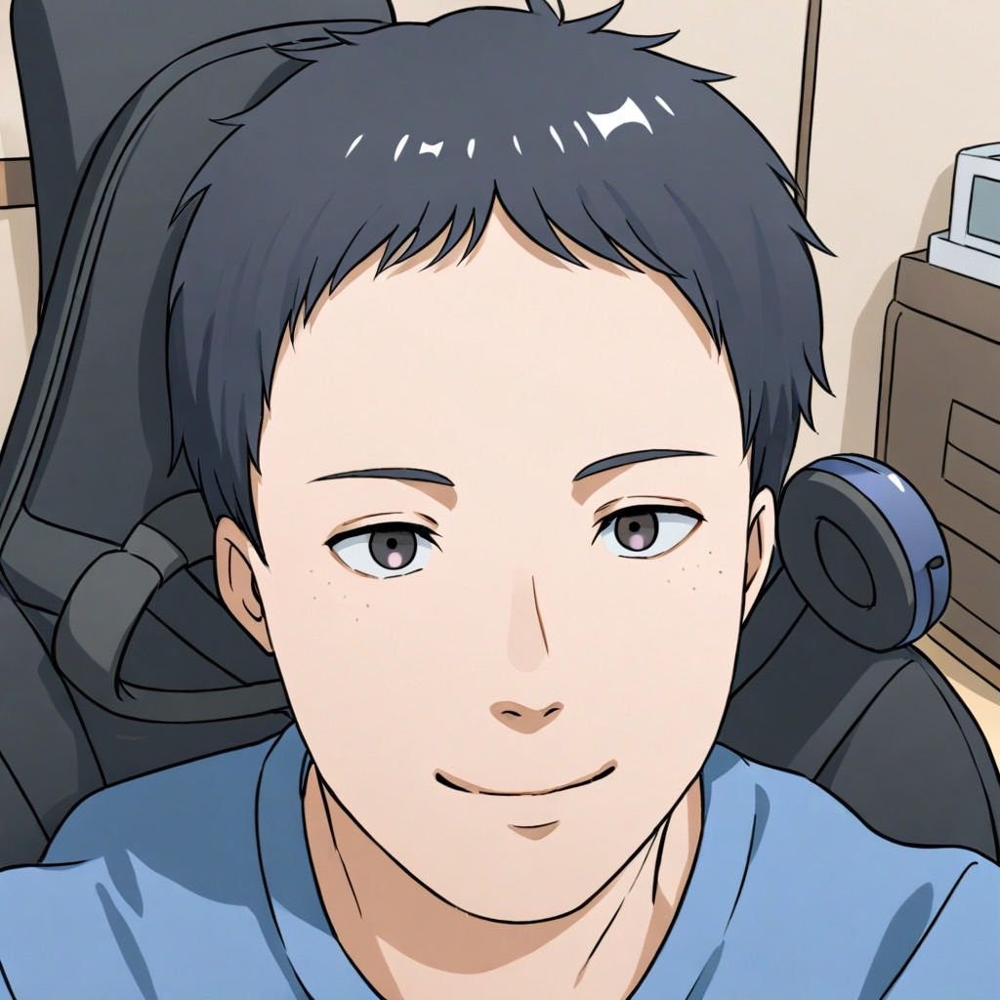
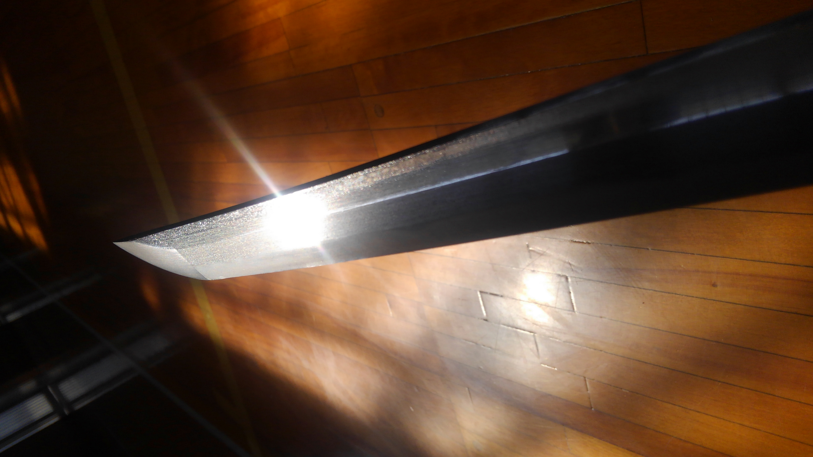
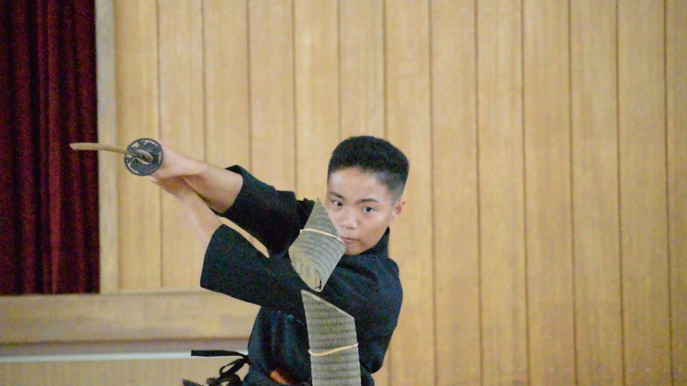
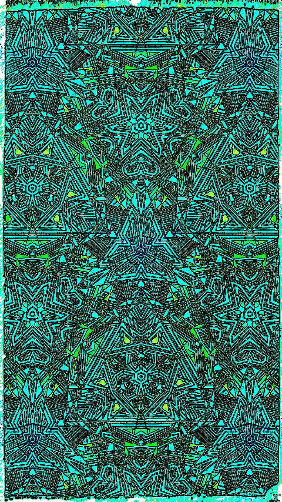
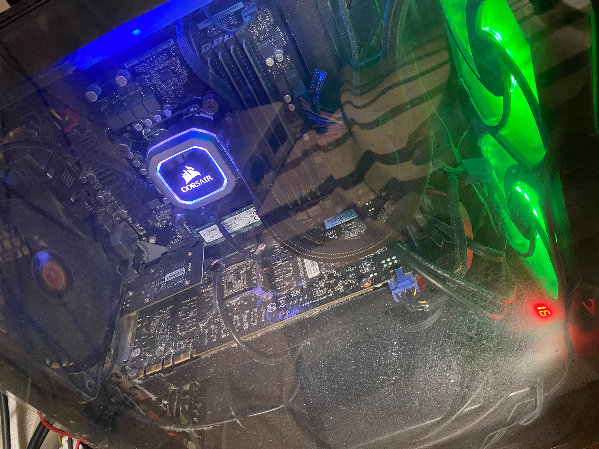
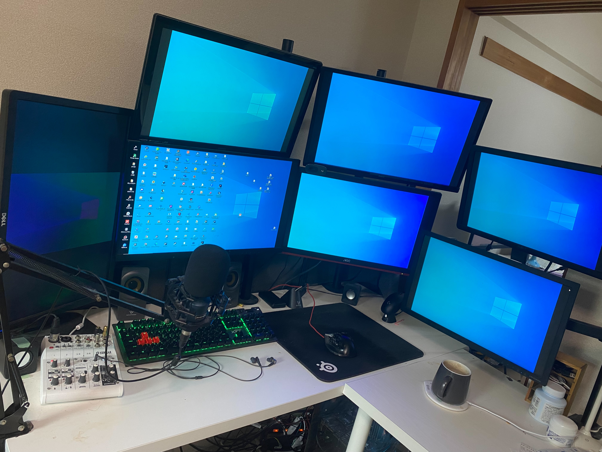
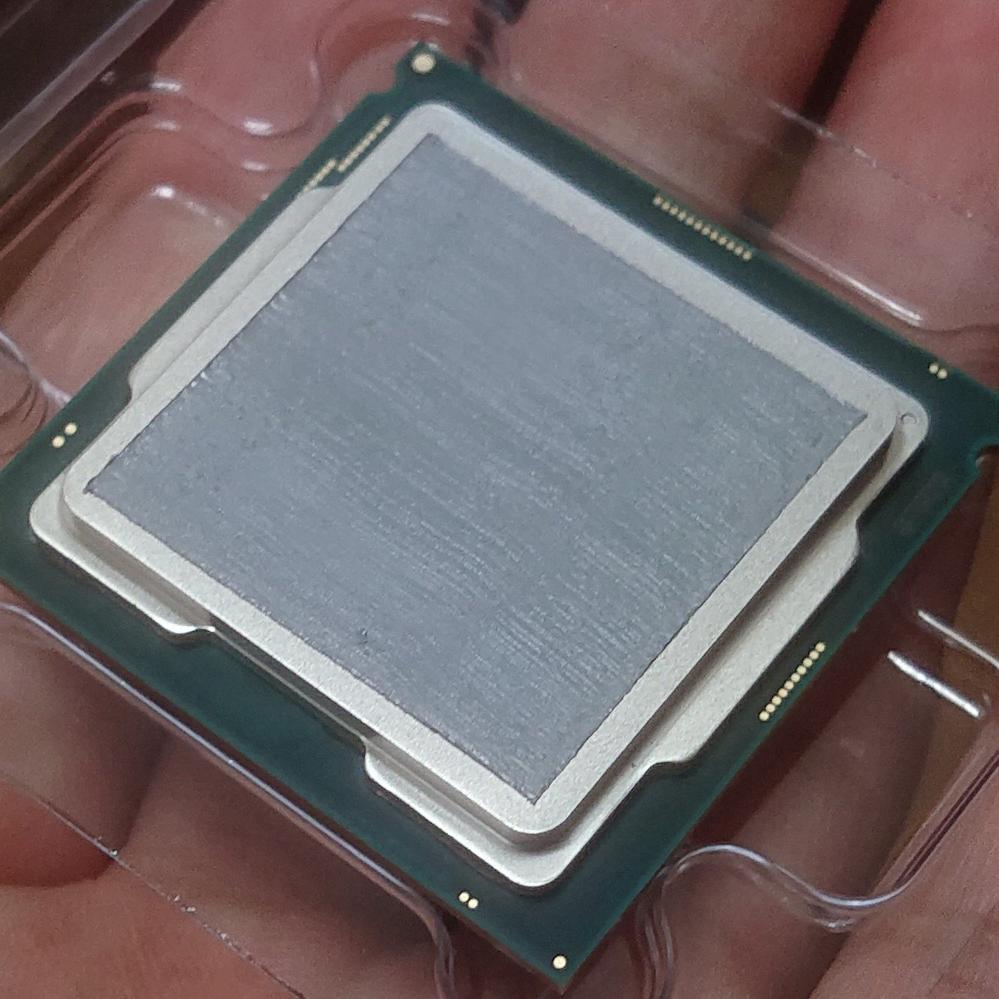
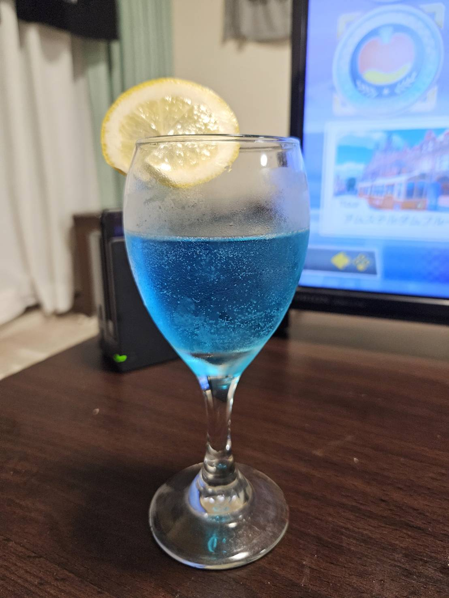

自己紹介

島田 晃
静岡県出身、多趣味な20代エンジニア。プライベートでは様々な趣味を楽しんでいます。結構、好奇心旺盛で、新しいことに挑戦するのが好きです。
武道や創作活動を通じて心身のバランスを保ちつつ、日常に彩りを加えることを大切にしています。オンとオフの切り替えを意識し、仕事もプライベートも充実させることを心がけています。
とにかくクリエイティブな事が好きです。
武道
居合道
心を静め、刀と一体となる瞬間を追求
日本刀試斬
伝統的な技と精神を学ぶ
創作活動
絵描き
デジタルアートとアナログ画の両方を楽しむ
自作PC
パーツ選びから組み立てまで、自分だけの一台を作る
  カクテル作り
様々なレシピに挑戦し、自分だけの一杯を追求
写真
景色の写真を撮ることで、その場所の良さを感じる

エンターテイメント
ゲーム
様々なジャンルのゲームを楽しむ
ネットサーフィン
新しい発見と知識の探求
アニメ鑑賞
多彩な作品世界に没入
絵画鑑賞
美術館巡りで感性を磨く
映画鑑賞
様々なジャンルの映画を楽しむ
読書
小説から専門書まで幅広く
ライフスタイル
旅行
新しい場所での発見と体験
カフェ巡り
お気に入りの一杯を求めて
バー巡り
お気に入りの一杯を求めて